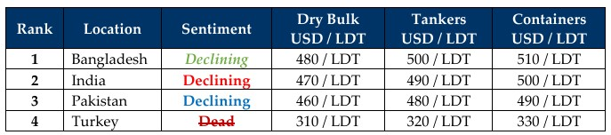

inWeekly Demolition Reports16/09/2024

In what is clear and imminent danger unfolding across the Middle East whereby various Iranian proxies seem to have risen in unison againstIsrael this week, as not only is there growing unrest in Jordan as Jordanians vow to become a part of the Muslim Brotherhood in defiance against Israel’s ongoing incursions into Gaza, but the Houthis in the South (likely emboldened by their Jordanian counterparts) launched a Hypersonic Ballistic missile early Sunday that flew from Yemen into the heart of Israel (about 1250 Kms in under 11 minutes) before Israel’s internal Air Defense System near Ben Gurion Airport tracked and shot it down just outside Tel Aviv. An already defiant and determined Israel that has nearly wiped Hamas out from Gaza and has now shifted its focus onto Hezbollah in the North, will deliver a violent response to this most volatile of aggressions from the Houthis, as Israeli PM Netanyahu himself vows to avenge. On to the Northeastern end of the world map, Ukraine has been on its own offensive against Russia, as Ukrainian Special Forces pounded downtown Moscow with 171 drones, attacked Russian war ships in ports, and even detonated a Russian oil rig in the North Sea that then saw Russia launching a barrage of long-distance missiles into Ukraine killing scores. While the U.S., U.K., and their NATO allies now ponder the release of authority to Ukraine on using Western made long range missiles, President Putin made veiled threats against the West this week, all while the Chinese Navy in the East increased its provocative stance when a Chinese Navy vessel rammed into a Philippine patrol boat, resulting in the world getting a real international whiff of not only political war at best, but a real one at worse.
As a result of the politics, warring, and ensuing global financial instability, ship recycling markets continue to endure profound challenges as the industry heads towards Q4 2024. On the financial side, we witnessed a seesawing of fundamentals as on the one hand, likely on the back of news that the U.S. Feds are revising another reduction in interest rates, the U.S. Dollar seemed to have declined a hair or stayed even across the board and offer Indian sub-continent & Turkish currencies a much-needed opportunity to stabilize this week, while on the other hand, local steel plate prices in both India & Pakistan suffered tragic declines, all at a time their +USD 500/LDT levels were the only things keeping Ship Owners / Cash Buyers interested in these recycling destinations. Even in the West, Turkish steel registered falls through late August at a time where local levels were their only safety net and are now collapsing under the feet of local recyclers. These declining steel levels have also shown few signs of easing in India & Pakistan where Gadani recyclers refuse to be a competitive resale option for no reason other than they can, and Bangladesh continues to dance to several soundtracks at the same time. What’s the bright side? None! The availability of candidates remains abysmal because of world affairs, and this continues choking out the possibility of determining where the new recycling lows lie, which themselves are changing every week. As a result, ship recycling markets themselves need to find some sort of floor / stability before even offering afresh on any units, thereby driving themselves to a complete standstill. Any candidates that do come for sale are met with comical numbers, as recyclers choose to wait and see where prices finally settle before, before returning to their snooze cruise again amidst a historically firmer time that is doing the opposite in 2024.
For Week 37 of 2024, GMS Market Rankings / vessel indications are as below.

📄 Download PDF: Ship-recycling-market-insight-Week-37-9-15-2024-At-War.pdfSource: GMS,Inc.https://www.gmsinc.net/gms_new/index.php/web